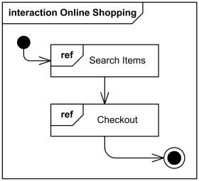
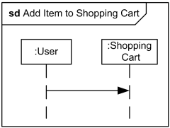
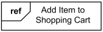

UML Interaction Overview Diagrams Reference
Interaction overview diagrams use activity diagram notation where the nodes are either interactions or interaction uses.
UML interaction overview diagram combines elements from activity and interaction diagrams.
| Notation | Description |
|---|---|
| Frame | |
|

Interaction overview diagram Online Shopping |
Interaction overview diagrams are framed by the same kind of frame that encloses other forms of interaction diagrams - a rectangular frame around the diagram with a name in a compartment in the upper left corner. Interaction kind is interaction or sd (abbreviated form). |
| Interaction | |
|

Interaction Add Item to Shopping Cart may appear inline on some interaction overview diagram |
An interaction diagram of any kind may appear inline as an invocation action. The inline interaction diagrams may be either anonymous or named. |
| Interaction Use | |
|

Interaction use Add Item to Shopping Cart may appear on some interaction overview diagram |
An interaction use may appear as an invocation action on an interaction overview diagram. |